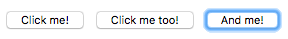

A great deal of web content can be made accessible just by making sure the correct Hypertext Markup Language elements are used for the correct purpose at all times. This article looks in detail at how HTML can be used to ensure maximum accessibility.
Prerequisites:
Objective:
To gain familiarity with the features of HTML that have accessibility benefits and how to use them appropriately in your web documents.
As you learn more about HTML — read more resources, look at more examples, etc. — you'll keep seeing a common theme: the importance of using semantic HTML (sometimes called POSH, or Plain Old Semantic HTML). This means using the correct HTML elements for their intended purpose as much as possible.
You might wonder why this is so important. After all, you can use a combination of CSS and JavaScript to make just about any HTML element behave in whatever way you want. For example, a control button to play a video on your site could be marked up like this:
<div>Play video</div>
But as you'll see in greater detail later on, it makes sense to use the correct element for the job:
<button>Play video</button>
Not only do HTML <button></button>s have some suitable styling applied by default (which you will probably want to override), they also have built-in keyboard accessibility — users can navigate between buttons using the Tab key and activate their selection using Return or Enter.
Semantic HTML doesn't take any longer to write than non-semantic (bad) markup if you do it consistently from the start of your project. Even better, semantic markup has other benefits beyond accessibility:
- Easier to develop with — as mentioned above, you get some functionality for free, plus it is arguably easier to understand.
- Better on mobile — semantic HTML is arguably lighter in file size than non-semantic spaghetti code, and easier to make responsive.
- Good for SEO — search engines give more importance to keywords inside headings, links, etc. than keywords included in non-semantic
<div>s, etc., so your documents will be more findable by customers.
Let's get on and look at accessible HTML in more detail.
Note: It is a good idea to have a screen reader set up on your local computer so that you can do some testing of the examples shown below. See our Screen readers guide for more details.
We've already talked about the importance of proper semantics, and why we should use the right HTML element for the job. This cannot be ignored, as it is one of the main places that accessibility is badly broken if not handled properly.
Out there on the web, the truth is that people do some very strange things with HTML markup. Some abuses of HTML are due to legacy practices that have not been completely forgotten, and some are just plain ignorance. Whatever the case, you should replace such bad code.
Sometimes you are not in the position to get rid of lousy markup — your pages might be generated by some kind of server-side framework over which you don't have full control, or you might have third party content on your page (such as ad banners) over which you have no control.
The goal isn't "all or nothing"; every improvement you can make will help the cause of accessibility.
One of the best accessibility aids a screen reader user can have is an excellent content structure with headings, paragraphs, lists, etc. An excellent semantic example might look something like the following:
<h1>My heading</h1>
<p>This is the first section of my document.</p>
<p>I'll add another paragraph here too.</p>
<ol>
<li>Here is</li>
<li>a list for</li>
<li>you to read</li>
</ol>
<h2>My subheading</h2>
<p>This is the first subsection of my document. I'd love people to be able to find this content!</p>
<h2>My 2nd subheading</h2>
<p>This is the second subsection of my content, which I think is more interesting than the last one.</p>
We've prepared a version with longer text for you to try out with a screen reader (see good-semantics.html). If you try navigating through this, you'll see that this is pretty easy to navigate:
- The screen reader reads each header out as you progress through the content, notifying you what a heading is, what is a paragraph, etc.
- It stops after each element, letting you go at whatever pace is comfortable for you.
- You can jump to the next/previous heading in many screen readers.
- You can also bring up a list of all headings in many screen readers, allowing you to use them as a handy table of contents to find specific content.
People sometimes write headings, paragraphs, etc. using presentational HTML and line breaks, something like the following:
<font size="7">My heading</font>
<br><br>
This is the first section of my document.
<br><br>
I'll add another paragraph here too.
<br><br>
1. Here is
<br><br>
2. a list for
<br><br>
3. you to read
<br><br>
<font size="5">My subheading</font>
<br><br>
This is the first subsection of my document. I'd love people to be able to find this content!
<br><br>
<font size="5">My 2nd subheading</font>
<br><br>
This is the second subsection of my content. I think is more interesting than the last one.
If you try our longer version out with a screen reader (see bad-semantics.html), you'll not have a very good experience — the screen reader hasn't got anything to use as signposts, so you can't retrieve a useful table of contents, and the whole page is seen as a single giant block, so it is just read out in one go, all at once.
There are other issues too beyond accessibility — it is harder to style the content using CSS, or manipulate it with JavaScript, for example, because there are no elements to use as selectors.
The language you use can also affect accessibility. In general, you should use clear language that is not overly complex and doesn't use unnecessary jargon or slang terms. This not only benefits people with cognitive or other disabilities; it benefits readers for whom the text is not written in their first language, younger people…, everyone, in fact! Apart from this, you should try to avoid using language and characters that don't get read out clearly by the screen reader. For example:
- Don't use dashes if you can avoid it. Instead of writing 5–7, write 5 to 7.
- Expand abbreviations — instead of writing Jan, write January.
- Expand acronyms, at least once or twice, then use the tag to describe them.
In the bad old days, people used to create page layouts using HTML tables — using different table cells to contain the header, footer, sidebar, main content column, etc. This is not a good idea because a screen reader will likely give out confusing readouts, especially if the layout is complex and has many nested tables.
Try our example table-layout.html example, which looks something like this:
<table width="1200">
<!-- main heading row -->
<tr id="heading">
<td colspan="6">
<h1 align="center">Header</h1>
</td>
</tr>
<!-- nav menu row -->
<tr id="nav" bgcolor="#ffffff">
<td width="200">
<a href="#" align="center">Home</a>
</td>
<td width="200">
<a href="#" align="center">Our team</a>
</td>
<td width="200">
<a href="#" align="center">Projects</a>
</td>
<td width="200">
<a href="#" align="center">Contact</a>
</td>
<td width="300">
<form width="300">
<input type="search" name="q" placeholder="Search query" width="300">
</form>
</td>
<td width="100">
<button width="100">Go!</button>
</td>
</tr>
<!-- spacer row -->
<tr id="spacer" height="10">
<td>
</td>
</tr>
<!-- main content and aside row -->
<tr id="main">
<td id="content" colspan="4" bgcolor="#ffffff">
<!-- main content goes here -->
</td>
<td id="aside" colspan="2" bgcolor="#ff80ff" valign="top">
<h2>Related</h2>
<!-- aside content goes here -->
</td>
</tr>
<!-- spacer row -->
<tr id="spacer" height="10">
<td>
</td>
</tr>
<!-- footer row -->
<tr id="footer" bgcolor="#ffffff">
<td colspan="6">
<p>©Copyright 2050 by nobody. All rights reversed.</p>
</td>
</tr>
</table>
If you try to navigate this using a screen reader, it will probably tell you that there's a table to be looked at (although some screen readers can guess the difference between table layouts and data tables). You'll then likely (depending on which screen reader you're using) have to go down into the table as an object and look at its features separately, then get out of the table again to carry on navigating the content.
Table layouts are a relic of the past — they made sense back when CSS support was not widespread in browsers, but now they just create confusion for screen reader users. Additionally, their source code requires more markup, which makes them less flexible and more difficult to maintain. You can verify these claims by comparing your previous experience with a more modern website structure example, which could look something like this:
<header>
<h1>Header</h1>
</header>
<nav>
<!-- main navigation in here -->
</nav>
<!-- Here is our page's main content -->
<main>
<!-- It contains an article -->
<article>
<h2>Article heading</h2>
<!-- article content in here -->
</article>
<aside>
<h2>Related</h2>
<!-- aside content in here -->
</aside>
</main>
<!-- And here is our main footer that is used across all the pages of our website -->
<footer>
<!-- footer content in here -->
</footer>
If you try our more modern structure example with a screen reader, you'll see that the layout markup no longer gets in the way and confuses the content readout. It is also much leaner and smaller in terms of code size, which means easier to maintain code, and less bandwidth for the user to download (particularly prevalent for those on slow connections).
Another consideration when creating layouts is using HTML semantic elements as seen in the above example (see content sectioning) — you can create a layout using only nested <div> elements, but it is better to use appropriate sectioning elements to wrap your main navigation (<nav>), footer (<footer>), repeating content units (<article>), etc. These provide extra semantics for screen readers (and other tools) to give users extra clues about the content they are navigating (see Screen Reader Support for new HTML5 Section Elements for an idea of what screen reader support is like).
Note: In addition to having good semantics and an attractive layout, your content should make logical sense in its source order — you can always place it where you want using CSS later on, but you should get the source order right to start with, so what screen reader users get read out to them will make sense.
By UI controls, we mean the main parts of web documents that users interact with — most commonly buttons, links, and form controls. In this section, we'll look at the basic accessibility concerns to be aware of when creating such controls. Later articles on WAI-ARIA and multimedia will look at other aspects of UI accessibility.
One key aspect of the accessibility of UI controls is that by default, browsers allow them to be manipulated by the keyboard. You can try this out using our native-keyboard-accessibility.html example (see the source code). Open this in a new tab, and try pressing the tab key; after a few presses, you should see the tab focus start to move through the different focusable elements. The focused elements are given a highlighted default style in every browser (it differs slightly between different browsers) so that you can tell what element is focused.

You can then press Enter/Return to follow a focused link or press a button (we've included some JavaScript to make the buttons alert a message), or start typing to enter text in a text input. Other form elements have different controls; for example, the <select> element can have its options displayed and cycled between using the up and down arrow keys.
You essentially get this behavior for free, just by using the appropriate elements, e.g.
<h1>Links</h1>
<p>This is a link to <a href="https://www.mozilla.org">Mozilla</a>.</p>
<p>Another link, to the <a href="https://developer.mozilla.org">Mozilla Developer Network</a>.</p>
<h2>Buttons</h2>
<p>
<button data-message="This is from the first button">Click me!</button>
<button data-message="This is from the second button">Click me too!</button>
<button data-message="This is from the third button">And me!</button>
</p>
<h2>Form</h2>
<form>
<div>
<label for="name">Fill in your name:</label>
<input type="text" id="name" name="name">
</div>
<div>
<label for="age">Enter your age:</label>
<input type="text" id="age" name="age">
</div>
<div>
<label for="mood">Choose your mood:</label>
<select id="mood" name="mood">
<option>Happy</option>
<option>Sad</option>
<option>Angry</option>
<option>Worried</option>
</select>
</div>
</form>
This means using links, buttons, form elements, and labels appropriately (including the <label> element for form controls).
However, it is again the case that people sometimes do strange things with HTML. For example, you sometimes see buttons marked up using <div>s, for example:
<div data-message="This is from the first button">Click me!</div>
<div data-message="This is from the second button">Click me too!</div>
<div data-message="This is from the third button">And me!</div>
But using such code is not advised — you immediately lose the native keyboard accessibility you would have had if you'd just used <button> elements, plus you don't get any of the default CSS styling that buttons get.
Building keyboard accessibility back in
Adding such advantages back in takes a bit of work (you can see an example in our fake-div-buttons.html example — also see the source code). Here we've given our fake <div> buttons the ability to be focused (including via tab) by giving each one the attribute tabindex="0":
<div data-message="This is from the first button" tabindex="0">Click me!</div>
<div data-message="This is from the second button" tabindex="0">Click me too!</div>
<div data-message="This is from the third button" tabindex="0">And me!</div>
Basically, the tabindex attribute is primarily intended to allow tabbable elements to have a custom tab order (specified in positive numerical order), instead of just being tabbed through in their default source order. This is nearly always a bad idea, as it can cause major confusion. Use it only if you really need to, for example, if the layout shows things in a very different visual order to the source code, and you want to make things work more logically. There are two other options for tabindex:
tabindex="0" — as indicated above, this value allows elements that are not normally tabbable to become tabbable. This is the most useful value of tabindex.tabindex="-1" — this allows not normally tabbable elements to receive focus programmatically, e.g., via JavaScript, or as the target of links.
While the above addition allows us to tab to the buttons, it does not allow us to activate them via the Enter/Return key. To do that, we had to add the following bit of JavaScript trickery:
document.onkeydown = (e) => {
if (e.key === "Enter") { // The Enter/Return key
document.activeElement.click();
}
};
Here we add a listener to the document object to detect when a button has been pressed on the keyboard. We check what button was pressed via the event object's key property; if the key pressed is Enter/Return, we run the function stored in the button's onclick handler using document.activeElement.click().activeElement which gives us the element that is currently focused on the page.
This is a lot of extra hassle to build the functionality back in. And there's bound to be other problems with it. Better to just use the right element for the right job in the first place.
UI control text labels are very useful to all users, but getting them right is particularly important to users with disabilities.
You should make sure that your button and link text labels are understandable and distinctive. Don't just use "Click here" for your labels, as screen reader users sometimes get up a list of buttons and form controls. The following screenshot shows our controls being listed by VoiceOver on Mac.

Make sure your labels make sense out of context, read on their own, as well as in the context of the paragraph they are in. For example, the following shows an example of good link text:
<p>Whales are really awesome creatures. <a href="whales.html">Find out more about whales</a>.</p>
but this is bad link text:
<p>Whales are really awesome creatures. To find more out about whales, <a href="whales.html">click here</a>.</p>
Form labels are also important for giving you a clue about what you need to enter into each form input. The following seems like a reasonable enough example:
Fill in your name: <input type="text" id="name" name="name">
However, this is not so useful for disabled users. There is nothing in the above example to associate the label unambiguously with the form input and make it clear how to fill it in if you cannot see it. If you access this with some screen readers, you may only be given a description along the lines of "edit text."
The following is a much better example:
<div>
<label for="name">Fill in your name:</label>
<input type="text" id="name" name="name">
</div>
With code like this, the label will be clearly associated with the input; the description will be more like "Fill in your name: edit text."

As an added bonus, in most browsers associating a label with a form input means that you can click the label to select or activate the form element. This gives the input a bigger hit area, making it easier to select.
You can find a nice explanation of the importance of proper text labels, and how to investigate text label issues using the Firefox Accessibility Inspector, in the following video: